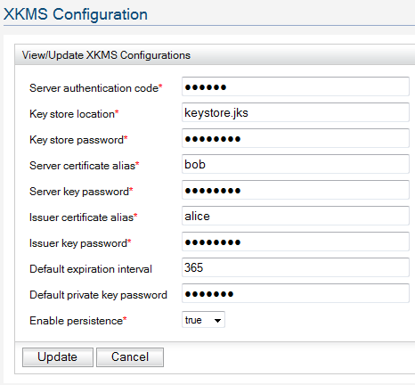

XKMS Implementation and Configurations
WSO2 Carbon ships with an in built XKMS trust web service which is being built on top of XKMS
specification and consists of 5 services which can be used to simplify key management. Following
is an description about the implementation and configuration of XKMS trust web service.
Contents
Introduction
XML Key Management Service Specification (a.k.a. XKMS) defines a standard way of
generating key pairs, storing public key information and retrieving public
key information. The XKMS services can be exposed as Web services which allow
other applications to delegate some of the key information processing to such
services. That allows the client applications of XKMS services to operate
without worrying about the Public Key Infrastructure which the XKMS services
might be using. XKMS consists of two components. Namely:
- Protocol Exchanges
Consist of sequences of request/response pairs. This will focus on synchronous,
asynchronous
and two-phase request protocols.
- Key Information Service (X-KISS)
This set of services allows the client application to retrieve information
about a public key. This has the following operations,
- Locate
- Validate
- Key Registration Service. (X-KRISS)
This set of services allows the client application to register the public
key of a client generated key-pair, retrieve the private key of a
server generated key-pair, revoke a registered public key and recover
a private key issued by the server. This has the following operations,
- Register
- Reissue
- Revoke
- Recover
Implementation
WS02 XKMS Implementation allows the users to expose a Java key store via the following
XKMS operations.
- Registration of a Key Pair
This allows the client to register a public key with the XKMS service.
The XKMS service uses the metadata specified in
the Register request to a X509Certificate using the given public key
and stores it in underlying Java keystore
as a X509Certificate. If a public key is not specified in the
Register request, the server will generate a RSA
key pair and will send the private key back to the client in an encrypted block.
Please refer to XKMS sample to see how to use an XKMS client to register a public
key with an XKMS server.
- Reissueing of a X509Certificate
This allows the client to reissue a X509Certificate with new credentials specified
in Reissue request. For example, the client may request the server to reissue a
X509Certificate with a new validity interval. However the
specified credentials are only advisory to the service.
Please refer to XKMS sample to see how to use a XKMS client to send a reissue
request to a XKMS Service.
- Recovering a Key Pair
This allows the client to recover the key (and the private key for server-generated
key pairs)
if it is lost. The private key will be presented inside an encrypted bock.
Please refer to XKMS sample to see how to use a XKMS client to send a recover
request
to a XKMS service.
- Locating a Public Key / X509Certificate
This allows the client to use a XKMS service to locate a Public key or
X509Certificate.
The XKMS service may reply with
more than one Public keys or X509Certificates if the query has multiple matches.
the client may use the alias
of the key as the key name in the query.
Please refer to XKMS sample to see how to use a XKMS client to send a locate request
to a XKMS service.
- Validating a Public key or a X509Certificate
This allows the client to validate a Public key or a X509Certificate using the XKMS
service.
The XKMS service will
reply whether the Public key or the X509Certificate is trustworthy.
Please refer to XKMS sample to see how to use a XKMS client to send a validate
request to the
XKMS service.
Configuration
The XKMS service can be configured by editing the following parameters for the service as
shown in figure 1.
-
Server authentication code
Specifies the authentication code used to authenticate client requests.
-
Key store location
Specifies the location of the Java keystore to be used as the key store of XKMS
service.
-
Key store password
Specifies the password of the above keystore.
-
Server certificate alias
Specifies the alias of XKMS server certificate. This will be used to sign
entire outgoing XKMS messages.
-
Server key password
Specifies the private key password of the service. This will be used to sign
entire outgoing XKMS messages.
-
Issuer certificate alias
Specifies the alias of the the Issuer certificate which will be used as
issuer certificate when generating
certificates for public keys specified in Register requests.
-
Issuer key password
Specifies the password of Issuer private key. This will be used when generating
certificates for public keys
specified in Register requests.
-
Default expiration interval
Specifies the default validity interval of generated certificates. Client can
request to
limit the validity
period to a value less than the default but can not increase it more than the
default period.
-
Default private key password
Specifies the password to be used to store server-generated private keys.
-
Enable persistence
Sets the flag to enable persistence. If set, it will persist the Java keystore when
the
keys are uploaded.

Figure 1: XKMS Configuration
Following are the configuration values provided by default:
- Server authentication code: secret
- Key store location: keystore.jks
- Key store password: password
- Server certificate alias: bob
- Server key password: password
- Issuer certificate alias: alice
- Issuer key password: password
- Default expiration interval: 365
- Default private key password: testing
- Enable persistence: true